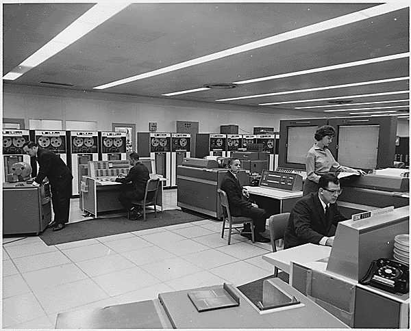
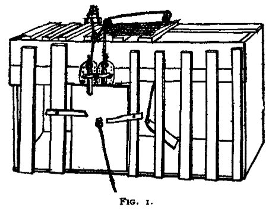

plan for all exigencies
… you planned for all exigencies. …
各种意外情况都预先想到
exigency 是「紧急情况、不得不应付的事」，书面词。这几段问话的对象是 Nemur（第 14 段 I asked Nemur）。译本：「我问伯特」。把提问的对象换成了 Burt，后面几段答话的人也就跟着错了。
报告 15 只有一条，日期是 7 月 12 日，约 1700 词，是全站最短的一页。上一页末尾查理决定把 Algernon 送回实验室、给 Nemur 打电话；这一条从他带着 Algernon 回到 Beekman 写起。读的时候抓两条线：一条是他和 Nemur、Burt 之间的位置；一条是他看 Algernon 的眼光，和他看自己的眼光。后半有一大段是他对自己说的话，别读快了。
32 岁，手术后四个多月，智商早已远远超过身边的人。6 月在芝加哥的大会上带着 Algernon 出走，在纽约租了公寓，和对门的画家 Fay 在一起，夜夜跳舞喝酒；和 Alice 仍然亲近不了。找到过父亲的理发店，没说出自己是谁。打算请 Welberg 基金会准他独立研究这项技术。Algernon 越来越反常，7 月 9 日咬了 Fay，也咬伤了 Minnie。
读的时候带着这几个问题。不用先找答案，读完回来对照「检查一下理解」。
这一页只有一条报告，一次读完。读完打个勾；下面的英文是这一条开头的几个词，在 Kindle 里搜它就能跳过去。没读的那几行先模糊着，免得提前看到情节，点一下就能看清。
按在书里出现的顺序排，标题前是节号。人名后面括号里是中译本的译名，读者想对照译本时用。
这一页开头，实验的人都在心理系的办公室里等着。下面几张卡片只写你此刻已经知道的。
1960 年代，一所大学的计算机通常是一台大型主机，放在专门的计算中心里，全校共用。用的人把程序和数据打在穿孔卡片上交进去，中心让作业排队，一个接一个地跑（批处理，batch processing），结果过些时候再去取。机器通常只有一台，谁的作业先跑，就是「优先权」（priority）。下面的照片是同一时期 NASA 的机房，不是大学的。

实验心理学用各种箱子和跑道考动物：门、杠杆、颜色，做对了才能到有食物的地方。书里说的 multiple problem box（多重问题箱）、blind-door run（暗门跑道）就是这一类，什么样子书里没有画。有一类题考的是规律：要学会的不是哪一扇门，而是「每隔一扇」「只走红门」这样的规则（见下图）。摸不出规律，就只能一扇扇去试，碰对了再记住，心理学叫试误（trial and error）。这个说法常和 Thorndike 1898 年的猫迷箱实验连在一起。

今天美国大学的动物实验室在规章里常写着这样的流程：实验动物死后，尸体装袋放进专用的冷冻柜，存到送去焚化为止。冷冻拖住腐烂，少了气味；焚化是处理带病菌、带药物的动物尸体常用的办法。书里 1960 年代的实验室也有这样一个房间。
倒数第二段查理列了一长串心理学的分支和流派。弗洛伊德、巴甫洛夫、行为主义见 13b 页。几个新的：格式塔（gestalt），德语「完形」，1910 年代由 Wertheimer、Köhler、Koffka 提出，认为人感知到的是整体，整体不等于部分相加。功能主义（functional），美国的一派，问心理活动有什么用、怎样帮人适应环境。机体论（organismic），把人当成一个完整的机体来研究，德国神经学家 Kurt Goldstein 是代表。分析心理学（analytical）是荣格的学派。心理测量（psychometrics）研究怎么编测验、打分数，智商测验就属于它。
两类：黄边的「每个字都认识」是熟词生义、俚语、话里的弦外之音；其余是这里用法特别的词。这一页查理没有拼错的字。斜体小字是原句里的几个词，在 Kindle 里搜它就能找到原文。
曲线在这一页是平的：7 月 12 日这一条句长约 13.5 词，九个字母以上的长词约 5.4%，都落在上一页各条的范围里，拼错仍是 0。倒数第二段那一长串心理学流派，长词扎堆。
变的是口气。这一条用过去时讲当天的事，中间常插进一句现在时的判断（Nemur「现在也没别的办法」「我不怪他」），像是事后坐下来写的；日期是 7 月 12 日，倒数第二段已经写到「那天晚上和接下来几天」。对 Nemur，他说跟实验有关的一切他都有权知道，自己的将来也算在内。整页最不顺的一句在 Algernon 身上：第 12 段说到 if and ... when 就断了，赶紧改口「我是说」。1959 年的中篇里也有 if and when，是查理说想知道那件事会不会、什么时候落到自己头上，一口气说完；长篇这里断成几截，说的是 Algernon。这是本站的对照。
Warren was the logical place—the deep freeze where I could be put away for the rest of my days.— §1，7 月 12 日，听完基金会的安排。本站译：Warren 是合乎逻辑的去处，是一座冷冻库，可以把我在里面放到死。
就在这之前，他在实验室最后那扇门后面看见冷冻室和焚化炉，要 Burt 别把 Algernon 扔进去。现在他把同一个词用到自己身上：Warren 就是他的冷冻室。前两句他还写「没什么可抱怨的，他们什么都想到了」，logical 一词冷静得像实验报告，紧跟着的 deep freeze 就露出了底。再下一句「至少不是焚化炉」，他自己叫它 private joke，Nemur 没听懂。Warren 的安排和焚化炉这一段，1959 年的中篇里都没有，是长篇加的。
Although we know the end of the maze holds death … the path I choose through that maze makes me what I am.— §1，7 月 12 日，Nemur 不愿他去看 Warren 之后。本站译：虽然我们知道迷宫的尽头是死亡……是我在迷宫里选的那条路，让我成为我。
从最早几篇报告起，迷宫一直是 Algernon 的、是测验的、是查理和它比赛的地方。这里他把迷宫当成了人生本身：终点人人一样，不一样的是怎么走。14a 页里 Fay 给 Algernon 的迷宫起过一个名字 Life is just a box of mazes，那是玩笑；这里查理是认真的。省略号省掉的主要是一个括号：他说自己并不是一直知道这一点，不久前心里那个少年还以为死只会落在别人身上。这一段的意思是：认识自己，不能只往回挖记忆，还要看清前面还有哪几条路。所以他要先去看 Warren。
1. 基金会付 Warren 的费用，另给查理一辈子的月钱，能自理还可以住在外面。查理说「没什么可抱怨的」，又说那是一座冷冻库。你觉得这份安排是周到，还是冷？
两样都是。钱、去处、退路都想到了，在书里的人看来已算周到。冷的地方在于这份安排是谁定的、为谁定的：它是和 Norma 谈的，细节查理到这一天追问才知道；它管的是万一失败了把他放在哪里，没有问他想怎样过。查理把它和冷冻室放在一起，挑的正是这一点。
2. 查理要求先去 Warren 看一看。他看出 Nemur 不安，说在 Nemur 眼里，这就像自己去订棺材。如果是你，会想先去看自己可能的去处吗？
查理给的理由是趁自己还能做主，先知道将来会怎样，才好做点什么。这和他这几个月追查过去是同一件事：不想被安排，想自己看清。代价是要提前面对最怕的东西。Nemur 的不安也可以理解：对他来说，那是一项实验的失败；对查理来说，那是他自己的日子。
3. 查理说，实验的事他都有权过问，自己的将来也在内；而当初同意书是 Norma 签的。他手术前不能自己同意，现在能了。之前替他定下的事，现在该不该重新问他？
书里没有人想到要重新问他，是他自己追问出来的。Nemur 的回答一句接一句都在讲「我们」当初怎么考虑、怎么和你妹妹说好，查理在这个安排里只是被安排的那一个。他这时已经比谁都清楚自己的处境，却要追问才拿到自己的计划书。今天的看法见下面「对照今天」。
先在心里答，再点开。答错的那题，回书里把对应那一条再读一遍。
查理越过他直接找了基金会，基金会准查理独立研究，还交代实验室和计算中心都给他用。查理的判断是：Nemur 现在没别的办法，查理解不开 Algernon 的问题，Nemur 的工作就白费了；解开了，大家都得救。
以前它能摸出简单的规律，比如隔一扇门、只走红门；现在跑了三趟还在乱试。查理问是不是离开实验室太久了，Burt 说有可能，先让它适应一下，第二天再看。
冷冻室和焚化炉，用来处理死了的实验动物。查理说不要把 Algernon 扔进去，交给他，他自己处理。Burt 没笑，只点了点头。
问的是 Nemur。查理在出门时问他，Nemur 被问住了，点了一支已经点着的烟，才一点一点说出来。
两个理由：一是他可能已经不是原来的人，手术、激素注射和这几个月的经历可能留下情绪上的问题；二是不知道会不会退回原来的水平，可能退得更低。
他不想让 Fay 和 Alice 碰上。他说要操心的事已经够多了。
用一句话说这一页：
隔几周回来，先看这几张卡片。想不起来的那张，点节号回到这一页，再回书里那一条。
一句话：查理在实验室看见了冷冻室，转身问出了自己的去处。
以前会找「隔一扇门」「只走红门」的规律，现在跑三趟还在一扇扇乱试。Burt 说它忘了很多。
§1Burt 带他看完整个实验室，还剩一扇沉重的门：冷冻室和焚化炉。查理站着没走，说 Algernon 别扔进去，交给他。
§1查理问「给我做了什么打算」，Nemur 先说没理由不让你知道，接着去点一支已经点着的烟。
§1基金会出钱送他去 Warren。查理想：那就是一座冷冻库。嘴上说「至少不是焚化炉」，Nemur 没听懂。
§1尽头人人都一样，是死；让他成为他的，是走哪条路。所以他要先去 Warren 看一看。
§1